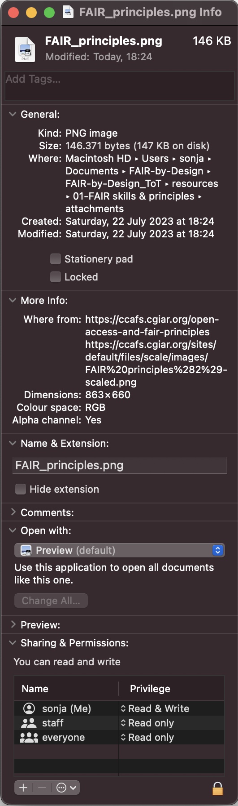
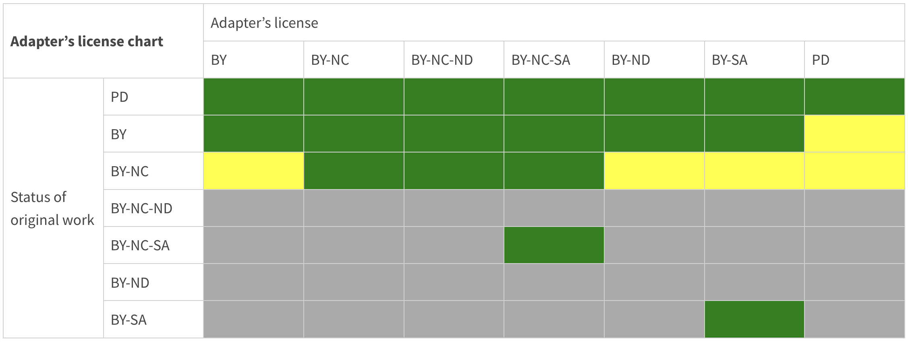

Preparing FAIR Learning Objects
The purpose of this learning unit is to introduce all relevant FAIR concepts that are necessary when developing learning objects such as metadata, PIDs, repo, licenses, attribution, etc. Once these concepts are adopted, the instructional designer is then ready to start with the backwards instructional process. The first step is ideation wherein the main aspects of the learning materials such as learning objects need to be defined.
Learning Objectives
- Recognize metadata
- Identify Permanent Identifiers (PIDs)
- Compare licenses
- Write attribution
- Categorizing learning repositories
- Interpret the instructional design process
- Preparing learning objectives
Target Audience
- attendees of the FAIR-by-Design ToT live webinar
Duration
30 mins
Prerequisites
Learning Tools
- Training BBB room
- Browser
- Menti access or BBB quiz interaction
Metadata and Metadata Schema
Metadata is one of the key ingredients to making learning resources findable, accessible, and reusable. In essence, metadata consists of structured information that describes, explains and locates a resource.
The main purpose of the (meta)data about the learning resource is to enable cataloguing and discovery by providing a standard means to report on:
- WHO created the resource
- WHAT is the content of the resource
- WHEN was the data resource
- WHERE is the location of the resource
- WHY the data was resource
Example metadata for an image
Using this information a learner or instructor should be able to:
- Search and retrieve the information about a learning resource
- Determine if the learning resource meets certain learning requirements
- Discover how to acquire and use the learning resource
RDA Minimal Metadata for Learning Resources
The RDA Education And Training On Handling Of Research Data Interest Group has defined a minimal metadata seta for learning resources that has become a de facto standard for describing FAIR learning materials.
The following table describes the minimal metadata set elements and their definitions:
| Element Name | Definition |
|---|---|
| Title | The human readable name of the resource. |
| Abstract / Description | A brief synopsis about or description of the learning resource |
| Author(s) | Name of entity(ies) authoring the resource |
| Primary Language | Language in which the resource was originally published or made available |
| Keyword(s) | Keywords or tags used to describe the resource |
| License | A license document that applies to this content, typically indicated by URL |
| Version Date | Version date for the most recently published or broadcast resource |
| URL to Resource | URL that resolves to the learning resource or to a "landing page" for the resource that contains important contextual information including the direct resolvable link to the resource, if applicable. |
| Resource URL Type | Designation of the identifier scheme used for the resource URL, e.g., DOI, ARK, Handle |
| Target Group (Audience) | Principal users(s) for which the resource was designed |
| Learning Resource Type | The predominant type or kind that characterizes the learning resource |
| Learning Outcome | Descriptions of what knowledge, skills or abilities a learner should acquire on completion of the resource |
| Access Cost | Choice stating whether or not there is a fee for use of the resource (yes, no, maybe) |
| Expertise (Skill) Level | Target skill level in the topic being taught; example values include beginner, intermediate, advanced |
This table is taken from RDA Minimal Metadata for Learning Resources by Hoebelheinrich, Nancy J; Biernacka, Katarzyna; Brazas, Michelle; Castro, Leyla Jael; Fiore, Nicola; Hellström, Margareta; Lazzeri, Emma; Leenarts, Ellen; Martinez Lavanchy, Paula Maria; Newbold, Elizabeth; Nurnberger, Amy; Plomp, Esther; Vaira, Lucia; van Gelder, Celia W G; Whyte, Angus licensed under the CC BY 4.0 license.
These elements need to be standardized so that they are useful when used in practice. This is done by defining a metadata schema that describes the structure of the metadata elements. The metadata schema defines the standards for describing the metadata elements.
The metadata schema for learning resources that also defines the type of each element, the allowed values, and constraints is available on the RDA website: RDA Minimal Metadata for Learning Resources Professional and Informal Education Examples
Controlled Vocabularies
Some of the fields in the proposed RDA metadata schema are based on fixed or suggested controlled vocabularies (CV). The use of controlled vocabularies is to help humans and machines categorize the information while helping to reduce duplication and errors.
In essence, controlled vocabularies should be used for any metadata elements with predefined value(s), where in the vocabulary is presented as a list of prescribed items.
Such examples are
- Access Cost with possible values of Y, N and Maybe
- Primary Language that can be a two letter code from the ISO 639-1:2002 codeset
Note that in many cases controlled vocabularies are suggested, but at this stage they are not strictly defined.
Later on during this training, you will learn how and where to define the metadata for your learning resources.
Learning materials repositories
The learning materials need to be stored in a learning repository so that they are made available to others. As the two perspective on learning materials (learners and instructors) have different needs regarding the type and content of the learning materials, to ensure FAIRness for both perspective the learning materials should be stored in two separate repositories:
- training repository that hosts editable learning materials for instructors
- learning repository that stores final learning materials to be consumed by learners.
In Skills4EOSC the suggested choices for the repositories are as follows:
- learning materials for instructors should be stored on Zenodo (from GitHub)
- learning materials for learners should be stored on the Skills4EOSC learning platform
Persistent Identifiers
A persistent identifier (PID) is a type of metadata. Its purpose is to uniquely tag a digital object and ensure that this tag is not going to change over time (remains persistent).
Using a PID one should be able to land on an accessible page with the listed digital object and its metadata. The actual access to the digital object from this page may be restricted.
PIDs are machine readable and help distinguish between
- different materials
- different versions of the same material.
Multiple kinds of PIDs exist such as DOI (digital object identifier), Handle (HNDL), ARK (Archival Resources Key).
For the purposes of creating FAIR learning materials we will be using a Zenodo provided DOI to generate a PID for the trainers learning material kit and the internal IDs system of the Skills4EOSC learning platform for identifying learning resources for learners.
IPR
Intellectual property refers to the creation of intellectual activity. Intellectual Property Rights (IPR) protects the interests of the creators and owners by providing them with rights over their creation.
For the purposes of creation of learning materials, the copyright and related rights branches of IPR are used. They are defined to protect literary and artistic creations, performances, phonograms by defining the authors’, owners’, performers’, producers’ and broadcasters’ rights.
Copyright
Original work can be protected by copyright law that grants the owner exclusive right to control certain rights such as reproduction. The copyright is owned jointly by all authors, or it may be owned by the employing institution.
Any work that you create by default makes you the copyright holder of it.
In general, use of copyright protected work requires permission from the owner.
That means only you are allowed to distribute whatever you created. If you want to transfer this right to other people as well, you can do that via a license.
In absence of exceptions or limitations, one can reuse an existing work if it is licensed to the user or it is licensed to the public using a public license such as the Creative Commons (CC) licenses or Free-Libre / Open Source Software (FLOSS) licenses.
Licensing
- parts of the content in this section are taken from the [CC FAQ website](https://creativecommons.org/faq/#can-i-combine-material-under-different-creative-commons-licenses-in-my-work) licensed under the [CC BY 4.0 license](https://creativecommons.org/licenses/by/4.0/legalcode).
A license allows you to define additional rights and obligations regarding your work that go beyond the copyright you own, and it can protect yourself.
One of the best sources of information for licensing reusable learning materials is Creative Commons.
Their Licence Chooser tool helps authors share their work in a standardised way providing copyright licenses that enable sharing and reuse of the creative work under the chosen conditions.
There are many available CC Licence options. It is recommended that the least restrictive CC BY 4.0 license, requiring only that credit is given to the creator when reusing, is used when creating new learning materials.
Combining and Remixing CCs
When reusing learning materials there is sometimes need to combine learning materials from different sources available under different licenses, i.e. combining.
If the combination does not create an adaptation, then you may combine any CC-licensed content so long as you provide attribution and comply with the NonCommercial restriction if it applies.
If you want to combine material in a way that results in the creation of an adaptation (i.e. a “remix”), then you must pay attention to the particular license that applies to the content you want to combine.
| adaptation | A modification rises to the level of an adaptation under copyright law when the modified work is based on the prior work but manifests sufficient new creativity to be copyrightable. |
|---|---|
This means that simple combining of readily available learning resources (using a resource as is) does not constitute an adaptation. In this case the rules of simple combining apply.
It is essential to understand that when reusing existing learning materials, one must ensure that the licenses of the included and adapted materials are compatible with each other. For these purposes, the CC license compatibility chart can be used.

Adapter's License
If you make adaptations of material under a CC license (i.e. “remix”), the original CC license always applies to the material you are adapting even once adapted. The license you may choose for your own contribution (called your “adapter’s license”) depends on which license applies to the original material.
The chart below details the CC license(s) you may use as your adapter’s license. When creating an adaptation of material under the license identified in the lefthand column, you may license your contributions to the adaptation under one of the licenses indicated on the top row if the corresponding box is green. CC does not recommend using a license if the corresponding box is yellow, although doing so is technically permitted by the terms of the license. If you do, you should take additional care to mark the adaptation as involving multiple copyrights under different terms so that downstream users are aware of their obligations to comply with the licenses from all rights holders. Dark gray boxes indicate those licenses that you may not use as your adapter’s license.

Licensing exercise
You are preparing a new course on Open Science and have decided to combine some already available content (images or even whole learning units) and also create your own learning content (additional learning units).
The content that you would like to reuse is:
- Your adaptation of Lesson 1 - What is Open Data from OpenSciency
- M1 - Open Science Ambassador Training from EURODOC
- slide 3 from Why open science? presentation by Sarah Jones
- slide 10 from Why open science? presentation by Sarah Jones
-
slide 5 from Why open science? presentation by Sarah Jones combined with the badges image and text from Center for Open Science into a new adaptation
-
The first thing you need to check is if reuse is allowed, i.e. check the licenses under which the content is released.
-
If this is so, then you need to determine if it is allowed to combine together these contents.
-
For the content that will be adapted, you need to check how the remix may be used.
-
Finally, you need to decide on the license of your work.
Attribution and Citing
Backward instructional design process
purpose
target audience
scope
prerequisites
Learning Objectives
Bloom's Taxonomy
Summary
At the end provide a short summary of the main points of the learning unit (these are the key takeaways that help reflect on the learning outcomes)
Suggested Reading
- Hoebelheinrich, Nancy J, Biernacka, Katarzyna, Brazas, Michelle, Castro, Leyla Jael, Fiore, Nicola, Hellström, Margareta, Lazzeri, Emma, Leenarts, Ellen, Martinez Lavanchy, Paula Maria, Newbold, Elizabeth, Nurnberger, Amy, Plomp, Esther, Vaira, Lucia, van Gelder, Celia W G, & Whyte, Angus. (2022). Recommendations for a minimal metadata set to aid harmonised discovery of learning resources (1.0).
- Jesse Long, Lisa Curtin, Persistent Identifiers, NTL Guide to DOIs & ORCID iDs for DOT Researchers, National Transportation Library (2022)